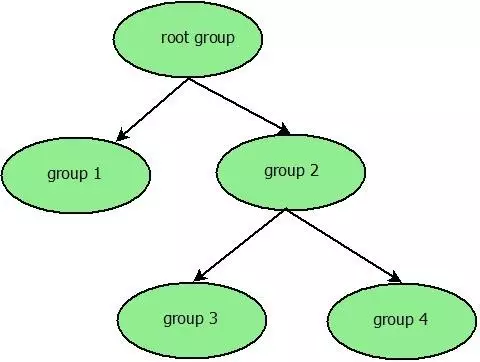
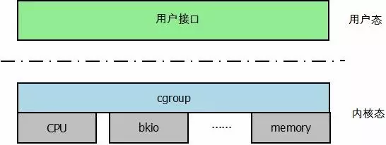
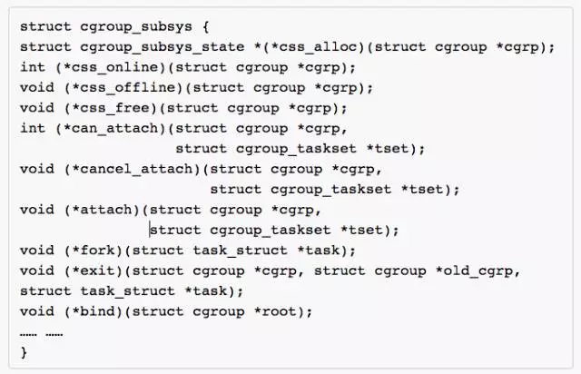
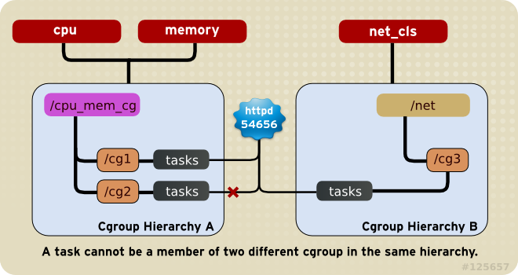
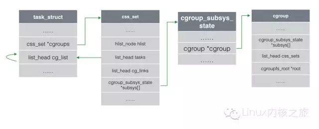
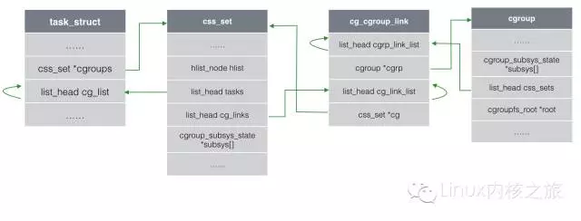
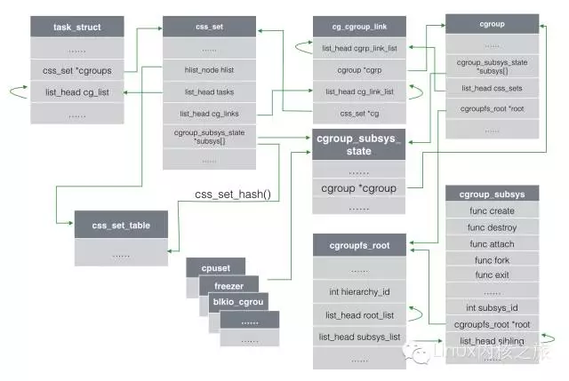
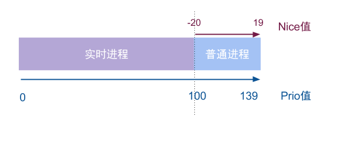

本文目的，仅用于自己梳理cgroup学习过程中整理的网络资料笔记，内容均来自网络。
https://www.kernel.org/doc/Documentation/cgroup-v1/cgroups.txt
https://www.yangcs.net/posts/understanding-cgroups-part-1-basics/
从下面几个方面进行整理：
- Cgroup简介
- subsystem的attach规则
- 实现原理
1 Cgroup简介
Cgroup（Control Groups）是这样一种机制：它以分组的形式对进程使用系统资源的行为进行管理和控制。也就是说，用户通过cgroup对所有进程进行分组，再对该分组整体进行资源的分配和控制。
系统内所有的进程组形成一颗具有层次等级（hierarchy）关系的进程组树。如下图

- 同一个进程可能处于多个进程组中，但是必须是位于不同的层级中
- 子进程在创建初期与父进程位于同一个进程组中
subsystem
子系统是cgroup对进程组进行资源控制的具体行为.
cpu子系统：该子系统为每个进程组设置一个使用CPU的权重值，以此来管理进程对cpu的访问。
cpuset子系统：对于多核cpu，该子系统可以设置进程组只能在指定的核上运行，并且还可以设置进程组在指定的内存节点上申请内存。
cpuacct子系统：该子系统只用于生成当前进程组内的进程对cpu的使用报告。
memory子系统：该子系统提供了以页面为单位对内存的访问，比如对进程组设置内存使用上限等，同时可以生成内存资源报告
blkio子系统：该子系统用于限制每个块设备的输入输出。首先，与CPU子系统类似，该系统通过为每个进程组设置权重来控制块设备对其的I/O时间；其次，该子系统也可以限制进程组的I/O带宽以及IOPS。
devices子系统：通过该子系统可以限制进程组对设备的访问，即该允许或禁止进程组对某设备的访问。
freezer子系统：该子系统可以使得进程组中的所有进程挂起。
net-cls子系统：该子系统提供对网络带宽的访问限制，比如对发送带宽和接收带宽进程限制
子系统与cgroup的关系

由图可以看出，cgroup在用户态提供统一的用户接口，而每个子系统对资源的控制功能则通过其钩子函数实现。这样使得cgroup在上层是一个统一的框架，而下层则可以实现多种资源的控制。每个子系统的钩子函数如下:

文件系统
cgroup在Linux内核中是以文件系统的形式存在的，不过cgroup对应的这种文件系统与proc文件系统类似，都是只存在于内存中的“虚拟”文件系统。既然如此，就可以通过mount命令创建一个cgroup实例。
1 | $ sudo mount -t cgroup -o memory memory_cgroup /dev/cgroup/ |
即在/dev/cgroup/下创建了一个memory子系统。接下来就可以通过：
1 | $ cat /proc/filesystems | grep cgroup |
可看到系统有了cgroup类型的文件系统。
当创建了一个cgroup实例后，对应的挂载点下会有一些文件，这些文件是用户与cgroup进行交互的接口。由于cgroup位于VFS层之下，因此用户可以通过统一的文件操作接口去读取或设置子系统的参数，当然也可以直接使用echo或者cat等命令。
cpu子系统
cpu子系统主要分布在内核的调度系统中，通过该子系统中的cpu.shares文件可对进程组设置权重。
根据CFS的原理，一个进程的权重越大，那么它的被调度的可能性就越大。那么进程组的权重如何在CFS中体现？CFS将进程和进程组视为同一个调度体，并用sched_entity结构来表示，每个结构中包含该调度体的权重以及虚拟运行时间等。
因此，用户可通过CPU子系统中的cpu.shares文件来控制进程组对CPU的使用。
cpuset子系统
通过cpuset子系统中的cpuset.cpus和cpuset.mems可对进程组设定可访问的CPU和内存节点。内核使用cpuset结构来描述cpuset子系统的属性信息，其中该结构中的cpus_allowed和mems_allowed两个字段分别保存上述两个文件的值。同时，进程描述符中也有cpus_allowed和mems_allowed两个字段，其值与cpuset结构保持同步。
cpuset限制进程所能访问的CPU主要通过两方面。首先体现在进程的创建，如果父进程新建子进程时没有指定CLONE_STOPPED标志，则父进程将调用wake_up_new_task()将子进程状态设置为TASK_RUNNING，并将其加入就绪队列。为子进程选择就绪队列的具体工作则由select_task_rq()完成，其内部实现将涉及CPU的检查操作，即在cpus_allowed所指定的cpu范围内为当前进程分配CPU。
其次，当调度器在调度一个进程时，也要通过select_task_rq()进行同样的对比选择。这样就可以保证cgroup实例中的进程只在cpus_allowed所限定的cpu中运行。
cpuset进程所能访问内存节点的限制表现在物理内存的分配过程中。Linux内核将物理内存在逻辑上分为node、zone和page，内核通过alloc_pages()来实现物理内存的分配工作。alloc_pages()的主要工作是在所有物理内存中选择node，再在当前node中选择zone，最终在zone中分配一个物理页框。其中，在选择node的过程中会进行mems_allowed的判断过程。
memory子系统
cgroup对内存的控制通过memory子系统完成，其控制作用主要体现在对内存使用量的限制，同时为当前cgroup生成一份内存使用情况报告。
在具体实现的过程中，cgroup通过内核中的resource counter机制实现内存的限制。resource counter相当于一个通用的资源计数器，在内核中通过res_counter结构来描述。该结构可用于记录某类资源的当前使用量、最大使用量以及上限等信息。
内核对res_counter进行操作时有三个基本函数：res_counter_init()对res_counter进行初始化；当分配资源时，res_counter_charge()记录资源的使用量，并且该函数还会检查使用量是否超过了上限，并且记录当前资源使用量的最大值；当资源被释放时，res_counter_uncharge()则减少该资源的使用量。
cgroup对内存资源的限制主要是将上述三个函数分布到内存的分配单元中，比如，系统发生缺页异常时，由于页表项未分配而申请内存时，由于页缓存而分配内存等。
blkio子系统
Cgroup中通过blkio子系统完成对块设备I/O的控制。具体的控制主要通过blkio.weight文件在用户态设定当前进程组访问块I/O的权重，也就是控制进程组占有I/O的时间。
blkio子系统对块I/O的控制代码主要分布在I/O调度算法中，目前内核中默认的调度算法为CFQ（完全公平队列），该算法与进程调度算法CFS比较类似。
1.1 如何查看当前系统支持哪些subsystem
以下是手机中cat /proc/cgroups节点的输出信息
1 | #subsys_name hierarchy num_cgroups enabled |
subsys_name:子系统的名字
hierarchy: 层级的ID
num_cgroups：层级中有的cgroup节点数量
enabled: 是否使能
1.2 查看进程的cgroup情况
1 | 2|XXX:/proc/4655 # cat cgroup |
1.3 cgroup的挂载
1 | # 挂载memory子系统到/dev/cgroup |
注意：
- 第一次挂载一颗和指定subsystem关联的cgroup树时，会创建一颗新的cgroup树，当再一次用同样的参数挂载时，会重用现有的cgroup树，也即两个挂载点看到的内容是一样的。
- 挂载一颗cgroup树时，可以指定多个subsystem与之关联，但一个subsystem只能关联到一颗cgroup树，一旦关联并在这颗树上创建了子cgroup，subsystems和这棵cgroup树就成了一个整体，不能再重新组合。
- 可以创建任意多个不和任何subsystem关联的cgroup树，name是这棵树的唯一标记，当name指定的是一个新的名字时，将创建一颗新的cgroup树，但如果内核中已经存在一颗一样name的cgroup树，那么将mount已存在的这颗cgroup树
1.4 管理单位
cgroup.procs vs tasks的区别： procs表示的是进程的ID， tasks表示的线程ID，
更加tasks可以进行更加细粒度的控制。
但在cgroup V2以后，将不再支持该功能，只能以进程为单位来配置cgroup
1.5 cgroup清理release_agent
https://segmentfault.com/a/1190000007241437
2 规则

一个层次结构，可以附着一个或者多个子系统（来源 RedHat）

一个子系统不能附着第二个已经附着过子系统的层次结构

一个任务不能是同一个层次结构下的不同控制组的成员

fork 出来的进程严格继承父进程的控制组
3 原理
https://www.cnblogs.com/yjf512/p/6003094.html



4 使用
4.1 限制cgroup内存使用
参考
在Android中有会用到cgroup来限制内存的使用挂载为memcg
目的： 限制一组进程的内存用量及内存使用情况控制。
功能
- 限制cgroup中所有进程使用内存的总量
- 限制cgroup中所有进程能够使用的物理内存和交换空间CONFIG_MEMCG_SWAP总量
- 限制cgroup中所有进的使用的内核内存总量及其他内核资源CONFIG_MEMCG_KMEM
内核配置
- memory subsystem消耗系统资源，可以单独配置关闭该子系统。cgroup_disable=memory
- CONFIG_MEMCG_SWAP, CONFIG_MEMCG_KMEM
CONFIG_MEMCG_SWAP
给 Memory Resource Controller 添加对swap的管理功能.这样就可以针对每个cgroup限定其使用的mem+swap总量.如果关闭此选项, memory resource controller 将仅能限制mem的使用量,而无法对swap进行控制(进程有可能耗尽swap).开启此功能会对性能有不利影响,并且为了追踪swap的使用也会消耗更多的内存(如果swap的页面大小是4KB,那么每1GB的swap需要额外消耗512KB内存),所以在内存较小的系统上不建议开启.
CONFIG_MEMCG_KMEM
为 Memory Resource Controller 添加对内核对象所占用内存的管理功能.和标准的 Memory Resource Controller 对内存的控制不一样之处在于:这些内核对象所占用的内存是基于每个内存页的,并且可以被swap到硬盘.使用这个功能可以确保cgroup中的进程不会单独耗尽所有内核资源
配置节点参数含义
1 | cgroup.event_control #用于eventfd的接口 |
拓展阅读：
（Android中基于CGroup的memory子系统HAL层分析-lmkd）
https://www.cnblogs.com/arnoldlu/p/6221609.html
4.2 限制cpu的使用
cpu相关的限制子系统有cpu, cpuset, cpuacct
cpu子系统控制节点
cpu.cfs_period_us，配置时间的周期长度（us）
cpu.cfs_quota_us， 配置周期长度内能够使用cpu时间数（us）
- cpu.shares， 设置cpu的相对值（默认1024）
- cpu.stat, 统计数据 nr_periods，过去了多少个周期； nr_throttled，有多少受到了限制； throttled_time， 被限制cpu持续了多长时间
4.3 schedtune限制
schedtune是ARM/Linaro为了EAS新增的一个子系统，主要用来控制进程调度选择CPU以及boost触发。
4.3.1 拓展知识进程调度
调度：从进程的就绪队列中选择合适的进程分配cpu资源运行。
进程分类：
- CPU消耗型
- IO消耗型
进程优先级：（比如根据进程的优先级进行调度，优先级高的先运行）

- 静态优先级： 不会时间而改变，内核也不会修改，只能通过系统调用改变nice值的方法区修改。优先级映射公式：
static_prio = MAX_RT_PRIO + nice + 20，其中MAX_RT_PRIO = 100，那么取值区间为[100, 139]；对应普通进程； - 实时优先级：只对实时进程有意义，取值区间为[0, MAX_RT_PRIO -1]，其中MAX_RT_PRIO = 100，那么取值区间为[0, 99]；对应实时进程；
- 动态优先级： 调度程序通过增加或减少进程静态优先级的值，来达到奖励IO消耗型或惩罚cpu消耗型的进程，调整后的进程称为动态优先级。区间范围[0, MX_PRIO-1]，其中MX_PRIO = 140，那么取值区间为[0,139]；
nice∈[-20, 19]，可通过adb直接修改某个进程的nice值： renice prio pid
时间片：
进程在被抢占和调度前所能持续运行的时间。
早期的Linux内核采用固定的时间片，现在的CFS调度器采用根据进程权重来分配cpu时间（权重与优先级有关）
调度算法
- 多级反馈队列调度算法
1 根据优先级划分不同的队列
2 进程A优先级大于进程B优先级，则调度器选择A
3 如果A与B优先级一样，且在同一个队列，则使用轮转调度算法
4 新进程放入最高优先级队列
5 当一个进程吃满了时间片，说明是一个cpu消耗型，那么需要将此进程优先级降一级，迁移到低一级的队列里。
6 如果进程在时间片还没有结束前放弃cpu，说明是IO消耗型，保持原来的高优先级。
缺点， 容易产生饥饿；有些进程会欺骗调度器；进程生命中有时候是cpu消耗型，有时候是io消耗型，很难区分。
改进：
（解决饥饿问题），每个时间周期S，把系统中所有进程优先级提到最高。
（解决欺骗），当一个进程时间片用完，不管是否在末尾发生io请求，都把优先级降一级。
- Linux O(n)调度算法
全局就绪队列（链表），从就绪队列中选择最佳就绪进程（基于优先级）运行，赋予固定的时间片。使用完后选择下一个进程。
- Linux O(1)调度算法
基于多级反馈算法的变种。
就绪队列分为两个优先级数组组成。活跃优先级数组，过期优先级数组。每个优先级数组包含140个优先级队列。
当活跃数组的所有进程用完了时间片后，活跃数组和过期数组互换。
- Linux CFS调度算法
4.3.2 schedtune
schedtune，是ARM/Linaro为了EAS新增的一个子系统，主要用来控制进程调度选择CPU以及boost触发，连接在 Android 系统的 /dev/stune 层级结构上。
EAS旨在以最小的功耗来获得最流畅的UI。这是其他外部组件（如schedtune）发挥作用的地方。
Schedtune在每个cgroup中由两个可调参数定义，以确保更好地控制要完成的任务。它不仅可以控制多个CPU上任务的分散，还可以控制感知负载，以确保更快地完成对时间敏感的任务。这样，用户所使用的前台应用程序和服务将不会减慢并导致不必要的性能问题。
拓展阅读
Android中关于cpu/cpuset/schedtune的应用
https://zhuanlan.zhihu.com/p/60030839 EAS调度器缘起
https://zhuanlan.zhihu.com/p/81668069 cgroup浅谈
https://android.googlesource.com/kernel/common/+/android-4.14/Documentation/scheduler/sched-tune.txt
schedtune.prefer_idle：调度cpu选择的倾向，更偏重性能还是功耗。
This is a flag which indicates to the scheduler that userspace would like
the scheduler to focus on energy or to focus on performance.A value of 0 (default) signals to the CFS scheduler that tasks in this group
can be placed according to the energy-aware wakeup strategy.
A value of 1 signals to the CFS scheduler that tasks in this group should be
placed to minimise wakeup latency.Android platforms typically use this flag for application tasks which the
user is currently interacting with
schedtune.capacity_min：
schedtune.boost：配置的值越大越偏重性能。使获得更多的cpu资源，更高的频率等。
The boost value is expressed as an integer in the range [0..100].
A value of 0 (default) configures the CFS scheduler for maximum energy
efficiency. This means that schedutil runs the tasks at the minimum OPP
required to satisfy their workload demand. A value of 100 configures scheduler for maximum performance, which translates to the selection of the maximum OPP on that CPU.
The range between 0 and 100 can be set to satisfy other scenarios suitably. For example to satisfy interactive response or depending on other system events
(battery level etc). The overall design of the SchedTune module is built on top of “Per-Entity Load
Tracking” (PELT) signals and schedutil by introducing a bias on the OPP selection. Each time a task is allocated on a CPU, cpufreq is given the opportunity to tune
the operating frequency of that CPU to better match the workload demand. The
selection of the actual OPP being activated is influenced by the boost value
for the task CGroup. This simple biasing approach leverages existing frameworks, which means minimal
modifications to the scheduler, and yet it allows to achieve a range of
different behaviours all from a single simple tunable knob. In EAS schedulers, we use boosted task and CPU utilization for energy
calculation and energy-aware task placement.